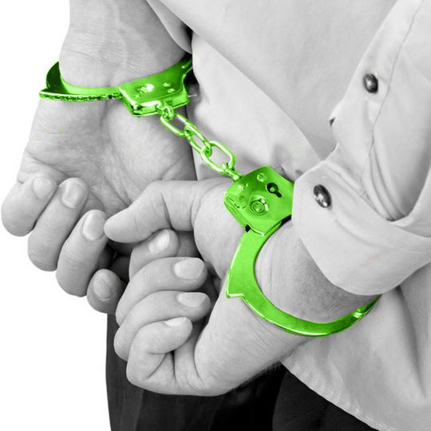

POLICE
The police officers have been working to provide peaceful environment to the citizens where they can work according to their wish. The police officers are expected to work with the great diligence under difficult circumstances.Whenever a person faces some problem he goes to police station for help,then it is the police headache to help that person coming out of that problem.Police officers perform every kind of duty to protect the citizen right but generally four main objectives come under their duty which are Traffic safety,Crime reduction,Violence prevention,Drug abuse education.
|
|
COMPLAINER
Its hard to be positive and productive when you have someone complaining in your ear all day.Chronic complainers believe the world is out to get them,but the truth is that they may not even know that they complain so much.Working around a chronic complainer is annoying and exhausting. You know the character-nothing pleases them,and they find fault in management every utterance,implicitly suggesting the people in charge are operating with a fatal deficiency of inteligence and common sense.
|
ACCUSED
Simple theft is a type of crime that involves unlawfully taking or using property that belongs to another person or entity.There are many different flavors of theft charges in most jurisdictions.Identity theft charges are becoming increasingly common as personal information becomes easier to obtain.Using another persons name,bank account,credit card.Using violence,intimidation,or threats to obtain property is typically considered robbery.
| |
FIR
First information report(FIR)is a return document prepared by the police when they receive information about the commission of a cognizable offence.It is a report of information that reaches the police first in point of time and that is why it is called the first information report.It is generally a complaint lodged with the police by the victim of a cognizable offence or by someone on his/her behalf.Anyone can report the commission of a cognizable offence either orally or in writing to the police.Even a telephonic message can be treated as an FIR.
|